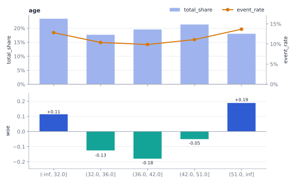

快速上手#
本教程对随包数据中的一个数值变量和一个类别变量进行分箱，衡量各箱对目标的区分能力，并检查年龄分布在两个样本之间是否发生偏移。下面的每个输出都由其上方的代码生成。
加载数据#
随包的营销数据记录了客户是否认购定期存款。下面按行切出两个样本演示用法，这一切分没有时间验证含义。
>>> import pandas as pd
>>> from kivi.datasets import Dataset
>>> from kivi.binning import bin_edges
>>> from kivi.woe import woe_table
>>> from kivi.stability import psi_table
>>> data = Dataset.bank_data()
>>> data.shape
(4521, 17)
>>> print(f"{data['target'].mean():.3f}")
0.115
>>> reference, current = data.iloc[:3000], data.iloc[3000:]
在基准样本上拟合分箱#
只在基准样本上拟合边界，再将同一组边界用于其他所有样本，使各组计数保持可比。
>>> edges = bin_edges(reference["age"], bins=5)
>>> edges
array([-inf, 32., 36., 42., 51., inf])
>>> before = pd.cut(reference["age"], edges)
>>> after = pd.cut(current["age"], edges)
最外侧的边界为无穷，因此超出基准范围的年龄仍会落入第一个或最后一个箱。
证据权重#
woe_table() 每箱返回一行，按区间顺序排列。
>>> evidence = woe_table(before, reference["target"])
>>> evidence[["event", "non_event", "woe", "iv"]].round(3)
event non_event woe iv
bin
(-inf, 32.0] 90 612 0.114 0.003
(32.0, 36.0] 55 475 -0.125 0.003
(36.0, 42.0] 58 529 -0.180 0.006
(42.0, 51.0] 71 569 -0.050 0.001
(51.0, inf] 74 467 0.189 0.007
>>> print(f"IV = {evidence['iv'].sum():.3f}")
IV = 0.019
WOE 为正表示该箱在认购客户中的占比高于在未认购客户中的占比。仅凭年龄区分这两类客户的能力较弱。
解读总值前先检查每一箱的贡献。只有少量事件的箱也可能有很大的 WOE，但它代表的客户可能很少。

同一张表的图形版本：上图为每个年龄箱的客户占比和认购率，下图为 WOE。年轻和年长的客户认购比例更高。#
类别变量#
类别标签可以直接传入，无需边界。
>>> jobs = woe_table(reference["job"], reference["target"])
>>> jobs.sort_values("woe", ascending=False)[["event", "non_event", "woe"]].round(3).head(3)
event non_event woe
bin
student 15 44 0.955
retired 29 121 0.602
unknown 4 21 0.373
>>> print(f"IV = {jobs['iv'].sum():.3f}")
IV = 0.137
群体稳定性#
psi_table() 逐箱比较两个样本，不使用目标标签。
>>> stability = psi_table(before, after)
>>> stability[["reference", "current", "psi"]].round(4)
reference current psi
bin
(-inf, 32.0] 702 353 0.0000
(32.0, 36.0] 530 255 0.0005
(36.0, 42.0] 587 281 0.0006
(42.0, 51.0] 640 337 0.0003
(51.0, inf] 541 295 0.0010
>>> print(f"PSI = {stability['psi'].sum():.4f}")
PSI = 0.0024